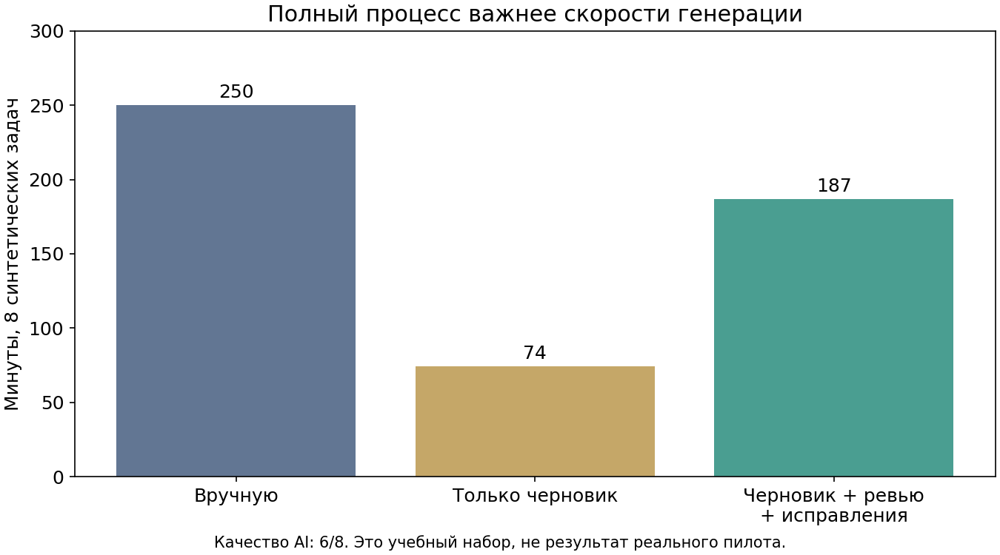

AI Academy · Business lab
Проверить решение до внедрения
Синтетические данные и вымышленные допущения. Панель не подключена к компании, не утверждает бюджет и не отправляет данные AI-сервисам.
Загружаем учебные файлы…
Не удалось открыть данные. Запустите локальный HTTP-сервер по инструкции README и обновите страницу.
Качество и полное время

Подвыборка успешных задач не заменяет общий результат. Интервал и среднее не доказывают причинный эффект на синтетике.
Портфель и ограничения
Операционная поддержка входит в сценарную оценку эффекта. Лимит выше относится к внедрению. Денежная прибыль не доказана.
Матрица данных и инструмента
Цель: обзор. Действие: подготовить черновик.
Это проверка локальной декларации. Реальные права, личность, хранение и договоры проверяются отдельно.